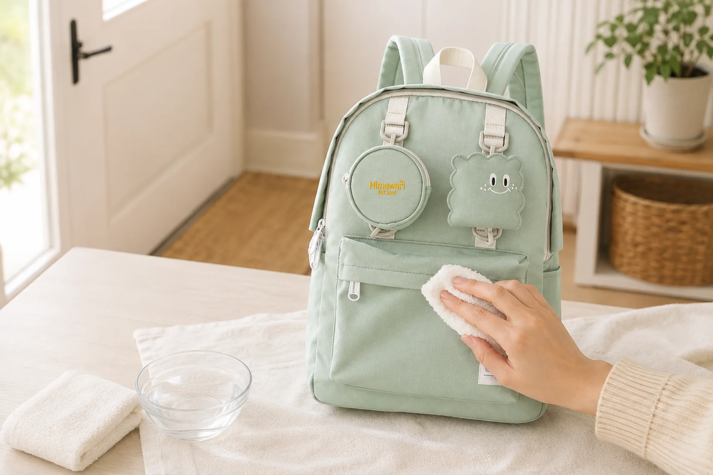

밝은 백팩의 자국을 발견했을 때 남길 순서

밝은 가방에 자국이 보이면 빨리 없애려고 손에 잡히는 천으로 문지르기 쉽습니다. 같은 색처럼 보여도 원단과 코팅, 장식의 관리 조건은 다를 수 있습니다. 자국이 어느 위치에 있는지와 무엇이 묻었는지 먼저 보면 필요한 질문을 만들 수 있습니다. 가방 전체의 세탁을 곧바로 결정하기보다 현재 상태를 살피고 해당 제품에서 허용하는 관리 범위를 확인하는 순서로 시작합니다.
자국을 본 위치와 당시의 상태
내용물을 꺼내고 자국 주변을 볼 자리를 마련합니다. 작은 포켓의 물건도 확인해 관리 중 필요한 소품이 남지 않도록 합니다. 어느 면의 어떤 위치인지 전체 모습과 함께 남길 수 있습니다. 날짜와 당시 사용한 물건을 메모하면 나중에 같은 곳에서 반복되는지 살펴볼 단서가 됩니다. 원인을 모르는 자국에 기억으로 이름을 붙이기보다 확인한 상태와 추정하는 내용을 구별합니다.
마른 먼지가 붙어 있는지, 젖은 흔적이 남았는지, 장식 주변의 변화인지 나누어 봅니다. 각 상태에 똑같은 액체나 힘을 쓰는 방법을 먼저 정하지 않습니다. 표면에서 가볍게 떨어지는 것과 원단에 남은 자국도 구별할 수 있습니다. 제품 안내가 허용하는 마른 정리부터 가능한지 확인합니다. 문제 부위가 더 넓어지는 모습을 보면서 같은 동작을 계속하기보다 지금의 상태를 남겨두는 편이 다음 판단에 도움이 됩니다.
젖은 자국이 있을 때에도 사용하는 제품의 안내에서 가능한 즉시 처리 방법을 읽습니다. 종이나 전자기기가 그 면과 직접 닿아 있다면 각각 안전한 위치로 옮깁니다. 주변 물건에 같은 흔적이 있는지도 확인할 수 있습니다. 세정제를 넣기 전에 어떤 물건이 남았고 가방의 어느 쪽이 젖었는지 보이면 관리 범위를 정할 수 있습니다. 이름을 모르는 오염은 문의할 질문으로 남겨도 됩니다.
부분 관리가 허용되는지 먼저
제품 라벨이나 판매처의 관리 안내에서 물과 세정액을 사용할 수 있는지 읽습니다. 겉감과 안감, 장식이 같은 조건이라고 가정하지 않습니다. 밝은색이라는 정보는 소재를 정하는 기준이 아니므로 실제 항목이 필요합니다. 안내가 불분명하다면 모델과 옵션, 자국 위치를 준비해 문의합니다. 다른 가방에서 성공한 방법을 현재 제품의 허용 범위처럼 가져오지 않고 해당 제품의 답을 기준으로 합니다.
다른 제조사의 안내를 참고할 때에도 적용 대상을 읽습니다. 예를 들어 Samsonite의 관리 안내는 일부 오염 제거 제품을 쓸 때 작은 부위에 시험해 변색과 자국 여부를 확인하도록 설명합니다. 이 안내를 모든 백팩에 같은 세정액을 쓰라는 뜻으로 옮기지 않습니다. 실제 가방에서 허용한 방법이 있는지 확인한 뒤 표면 변화를 읽는 순서를 참고할 수 있습니다.
Himawari No.0422 민트를 관리할 때에는 현재 제품의 관리 표시와 자국 위치를 연결합니다. 사진의 색을 보고 세탁 조건을 정하기보다 제품 정보와 문의에서 필요한 범위를 확인합니다. 자국이 있는 전체 면과 가까운 상태를 남기면 설명할 위치가 분명해집니다. 실제 관리가 허용된 부분부터 준비하고 다른 면과 장식의 상태도 같은 시점에 살펴보는 방식입니다.

허용된 방법에서도 표면 변화를 읽는다
부분 관리가 허용되어 시험할 계획이라면 해당 안내가 정한 작은 범위와 도구를 사용합니다. 천에 색이 묻어나는지, 마른 뒤 테두리나 광택의 변화가 있는지 확인할 시간을 둡니다. 젖은 순간의 모습만 보고 더 넓은 면으로 바로 진행하지 않습니다. 결과를 읽기 어렵거나 변화가 생겼다면 같은 방법을 반복하기 전에 안내와 문의로 확인합니다. 관리 과정도 하나씩 살펴보면 어떤 동작 이후의 상태인지 남습니다.
오염 부위를 다룰 때에는 안내된 범위를 유지하고 지퍼와 라벨, 별도 장식을 함께 적셔도 되는지 확인합니다. 도구를 바꾸거나 세정액을 더 사용하는 결정도 같은 안내 안에서 합니다. 자국을 한 번에 지우기 위해 힘을 늘리는 방식으로 진행하지 않습니다. 처리한 면과 아직 손대지 않은 면을 구별해두면 문의할 때 현재 상태를 설명하기 쉽습니다. 원래 모습과 관리 후의 모습은 날짜를 나누어 남길 수 있습니다.
가방을 말리는 조건도 제품 안내를 따릅니다. 뜨거운 바람이나 난방기로 시간을 줄이는 방법을 임의로 적용하지 않습니다. 겉면이 달라졌다고 안쪽의 물기까지 같은 상태라고 판단하지 않고 각각 봅니다. 필요한 관리가 끝나지 않았다면 내용물을 되넣는 준비를 미룹니다. 내일 사용할 일정이 있다면 다른 구성을 준비할 수 있도록 남은 상태를 읽어두면 됩니다.
자국이 남았을 때의 다음 선택
허용된 방법을 쓴 뒤에도 자국이 남으면 사용한 도구와 처리한 범위, 발견한 표면 변화를 정리합니다. 제품 문의에 필요한 전체 사진과 가까운 사진을 함께 준비합니다. 원인을 확정하지 못한 상태에서 서로 다른 세정제를 연속해서 쓰기보다 실제로 무엇을 했는지 남겨 안내를 받는 편이 좋습니다. 원단의 손상인지 단순 오염인지 사진만으로 스스로 확정할 필요는 없습니다.
다음 외출을 준비할 때에는 자국이 생긴 위치와 닿는 소품을 봅니다. 펜과 화장품, 물병의 상태는 각 물건의 안내에 맞춰 확인합니다. 같은 면에 반복해서 닿는 묶음이 있다면 위치를 바꿀 수 있습니다. 밝은색을 선택한 뒤 모든 자국을 피해야 한다는 부담보다 실제로 변화가 보인 자리를 알아볼 기준을 남깁니다. 관리가 끝난 가방과 준비된 소지품이 각각 읽히는 상태로 다시 사용합니다.
자국을 발견한 순간의 사진과 확인한 관리 안내가 함께 남아 있으면 다음에도 같은 질문을 새로 만들 필요가 줄어듭니다. 제품이 달라졌다면 이전 방법을 그대로 가져오기보다 새 안내를 봅니다. 작은 오염의 관리에서도 위치와 상태, 허용된 범위가 순서대로 연결되어 있어야 합니다. 표면 변화를 확인한 뒤 정리할 수 있는 것과 문의가 남은 것을 나누면 다음 선택이 분명해집니다.